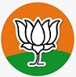
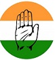
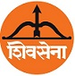
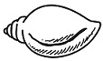
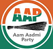

| Andhra Pradesh |
Amaravati |
Y.S.Jagan Mohan Reddy |
YSR Congress Party |
|
| Arunachal Pradesh |
Itanagar |
Pema Khandu |
Bharatiya Janata Party |
 |
| Assam |
Dispur |
Himanta Biswa Sarma |
| Bihar |
Patna |
Nitesh Kumar |
Janata Dal |
|
| Chhattisgarh |
Naya Raipur/Bilaspur |
Bhupesh Baghel |
Indian National Congress |
 |
| Goa |
Panaji |
Pramod Sawant |
Bharatiya Janata Party |
|
| Gujarat |
Gandhinagar |
Bhupendra Rajnikant Patel |
| Haryana |
Chandigarh |
Manohar Lal Khattar |
| Himachal Pradesh |
Shimla |
Jai Ram Thakur |
| Jammu and Kashmir |
Srinagar,Jammu |
-------- |
-------- |
|
| Jharkhand |
Ranchi |
Hemant Soren |
Jharkhand Mukti Morcha |
|
| Karnataka |
Bengaluru |
Basavaraj Bommai |
Bharatiya Janata Party |
|
| Kerala |
Thiruvananthapuram |
Pinarayi Vijayan |
Communist Party Of India |
|
| Madhya Pradesh |
Bhopal |
Shivraj Singh Chouhan |
Bharatiya Janata Party |
|
| Maharashtra |
Mumbai |
Uddhav Thackeray |
Shiv Sena |
 |
| Manipur |
Imphal |
Nongthombam Biren Singh |
Bharatiya Janata Party |
|
| Meghalaya |
Shillong |
Conrad Kongkal Sangma |
National People's Party |
|
| Mizoram |
Aizwal |
Pu Zoramthanga |
Mizo National Front |
|
| Nagaland |
Kohima |
Neiphiu Rio |
Nationalist Democratic Progressive Party |
|
| Odisha |
Bhubaneshwar |
Naveen Patnaik |
Biju Janata Dal |
 |
| Punjab |
Chandigarh |
Bhagwant Mann |
Aam Aadmi Party |
 |
| Rajasthan |
Jaipur |
Ashok Gehlot |
Indian National Congress |
|
| Sikkim |
Gangtok |
Prem Singh Tamang |
Sikkim Krantikari Morcha |
|
| Tamil Nadu |
Chennai |
M.K. Stalin |
Dravida Munnetra Kazhagam |
|
| Telangana |
Hyderabad |
Kalvakuntla Chandrasekhar Rao |
Telangana Rashtra Samithi |
|
| Tripura |
Agartala |
Biplab Kumar Deb |
Bharatiya Janata Party |
|
| Uttar Pradesh |
Lucknow |
Yogi Adityanath |
| Uttarakhand |
Dehradun |
Pushkar Singh Dhami |
| West Bengal |
Kolkata |
Mamata Banerjee |
All India Trinamool Congress |
|